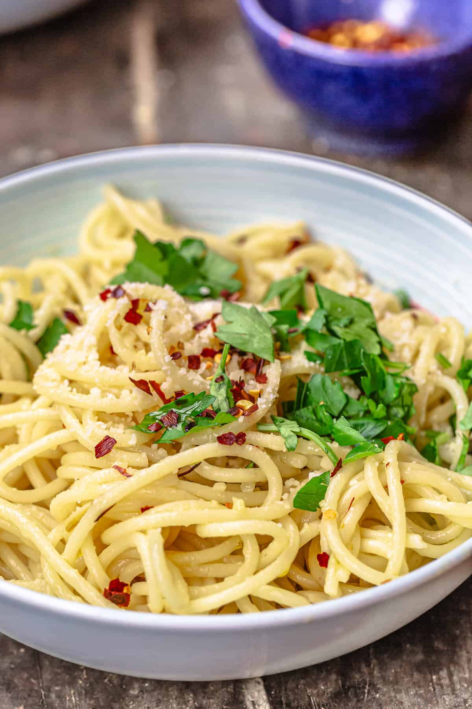

Aglio e Olio

Description
Aglio and Olio (just "garlic and oil" in italian) is a really
great meal to know how to make in a pinch if you don't have the
time or energy or ingredients to make something more complicated.
It's basically just pasta and garlicky oil but it's really good!
Ingredients
- Garlic (at least 2 cloves but really you can do as much as you want)
- Extra Virgin Olive Oil (italians just call this "oil")
- Spaghetti (half a box for one person, whole box for two)
- Salt (you need to put a lot in the water but that's it)
- Optional: red pepper flakes (really good if you want it)
Directions
- Slice up the garlic cloves. Pretty thin, but doesn't need to be like super crazy thin.
- Bring enough water for your pasta to a boil. Make the water really salty.
a lot of people don't know but you have to put a lot of salt in the water
because it's like your only chance to flavor the pasta. They say it should
be "like the sea" which i personally think is probably a little much but
if you aim for that it'll put you in the right direction.
- Add the pasta to the water once it's boiling, but subtract 2-3 minutes from
the cooking time given on the box. We're gonna be finishing cooking it in
the pan so you don't wanna cook it all the way in the water
- Pour some oil into a pan. You want like a little shallow pool of oil, deep enough for
your garlic slices to be fully submerged and then a touch more. Put the garlic in the oil
and then turn the heat on to medium-high. Pay close attention to the garlic. You want
it to toast but not burn at all. If the garlic is done before your pasta you can
just take it off the heat.
- When the pasta is 2-3 minutes shy of done, add it to the pan. DOn't even strain it,
just use tongs or something to put it directly in the pan. We need starchy pasta water
to mix with the oil and make it creamy. Whatever water comes along with the pasta in this step
is great
- Okay, just go look up a video for the rest. It's basically done, you just have to mix it up
and add more water from the pasta pot until the consistency is right. Also I forgot about the
red pepper flakes earlier but you just add that when the garlic is cooking so that it
flavors the oil. Thats probably in the video too.
- Enjoy!